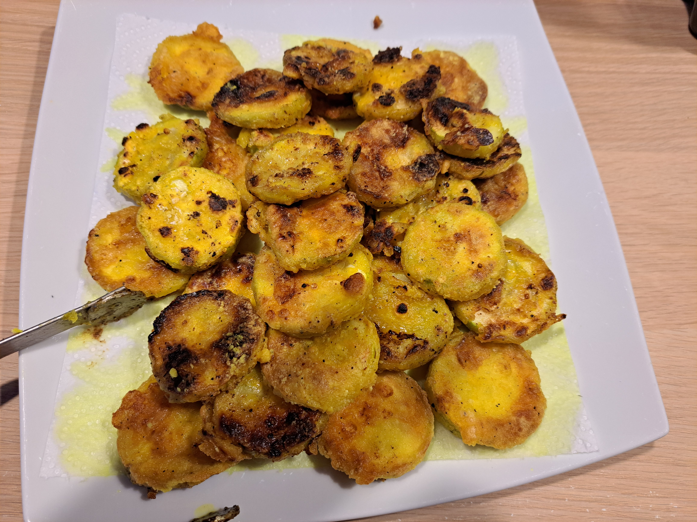

Zucchini Fritters

Instructions
1
Draw out moisture from the zucchini
Salt both sides of the rounds and place them on paper towels. Flip them over and let rest for 15 minutes. Pat dry thoroughly before continuing.
2
Prepare the two mixtures
In a small bowl, combine the milk and vinegar. In another bowl, mix together the pepper, potato starch, turmeric, and remaining salt.
3
Coat the rounds
Dip each round into the vinegared milk, then coat it in the starch mixture. Shake off the excess and set aside on a plate.
4
Cook the fritters
In a large non-stick pan, heat 1 tbsp of olive oil over medium heat. Arrange a single layer of rounds and cook for 3 to 4 minutes until golden brown, then flip to cook the other side. Repeat with the remaining oil and rounds.
5
Serve
Enjoy hot with sweet or spicy soy sauce.